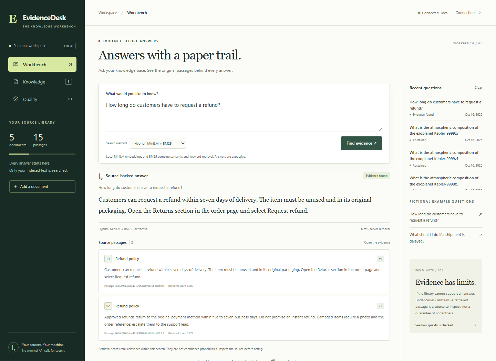

Personal project / Applied AI & retrieval
EvidenceDesk
Support answers should come with evidence a person can inspect. A local workbench for retrieving, citing and versioning support knowledge.

The problem
Policies change. A fluent answer is difficult to trust if its source is missing, outdated or unrelated. EvidenceDesk makes the retrieval decision visible: which source supports this response, and when should the system abstain?
How the system works
- Ingest bounded text documents with stable identities and versioned source snapshots.
- Compare a BM25 lexical baseline with actual local MiniLM embedding inference and hybrid retrieval.
- Return extractive source excerpts with citations, or abstain when support is insufficient.
- Inspect query history, update knowledge with stale-write protection and delete stored documents.
FastAPI validates the request boundary. SQLite holds documents, versions and query records. CPU inference runs locally after the initial public model download. There is no remote URL ingestion or arbitrary tool execution.
Verification and limits
The 16 October 2026 local evaluation used five fictional policies, four development cases and a separate 26-case holdout: 18 answerable questions and eight unsupported/adversarial questions. The threshold was fixed before holdout execution. Actual MiniLM CPU inference was executed; no paid API or generative LLM is involved.
| Measure | BM25 baseline | Hybrid |
|---|---|---|
| Answerable Recall@3 | 11/18 (61.11%) | 14/18 (77.78%) |
| Unsupported/adversarial refusals | 8/8 | 8/8 |
| Citation snapshot traceability | 100% | 100% |
Read the executed evaluation report
Forty-six backend tests and Ruff checks passed locally. Hybrid retrieval missed four of the 18 answerable holdout cases. This small regression set is not an independent benchmark; traceability proves a citation matches stored source, not that the source itself is correct.
This measures retrieval, refusal and citation integrity. It does not evaluate generative LLM output, customer satisfaction, business savings or production scale. The project is a bounded single-workspace service; multi-tenant authorization is outside its scope.
Contribution and local setup
Personal project developed with Codex assistance. The repository documents implementation, executable checks and limits. Runnable capabilities are project evidence, not a claim of prior professional AI engineering employment or independently assessed individual proficiency.
From the reviewed EvidenceDesk project folder, create a Python 3.12+ environment and run the commands below. The first semantic ingestion downloads the public MiniLM model; subsequent inference uses the local cache. No API key is required. The public repository contains the complete setup, source and evaluation commands.
python -m venv .venv
.\.venv\Scripts\Activate.ps1
python -m pip install -c requirements.lock -e '.[dev]'
python -m evidencedesk
# Reproduce backend checks and retrieval evaluation
python -m pytest -q
python -m evidencedesk.evaluate
Open http://127.0.0.1:8011. A model-free BM25 mode is documented.
Hosted verification and the Docker image build passed
for commit 5982dc1. An image build is distinct from a running public service;
cloud deployment remains pending.